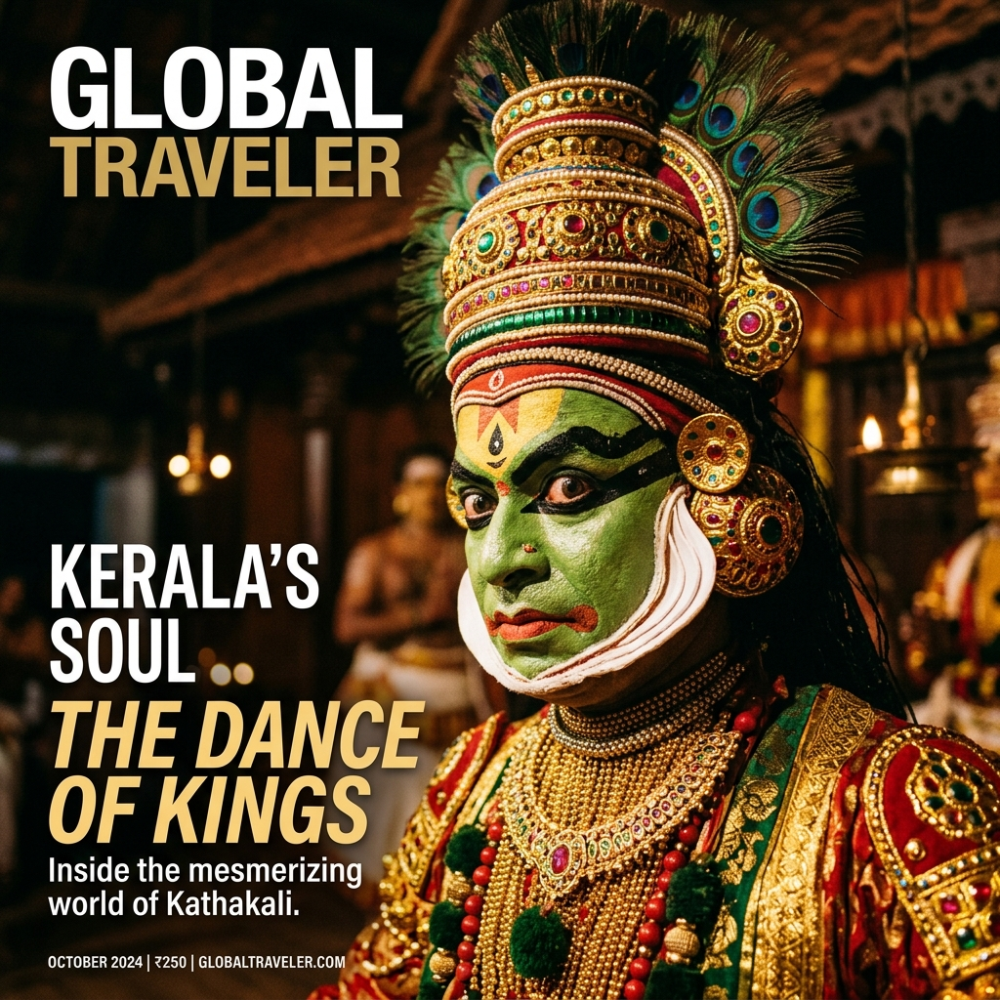
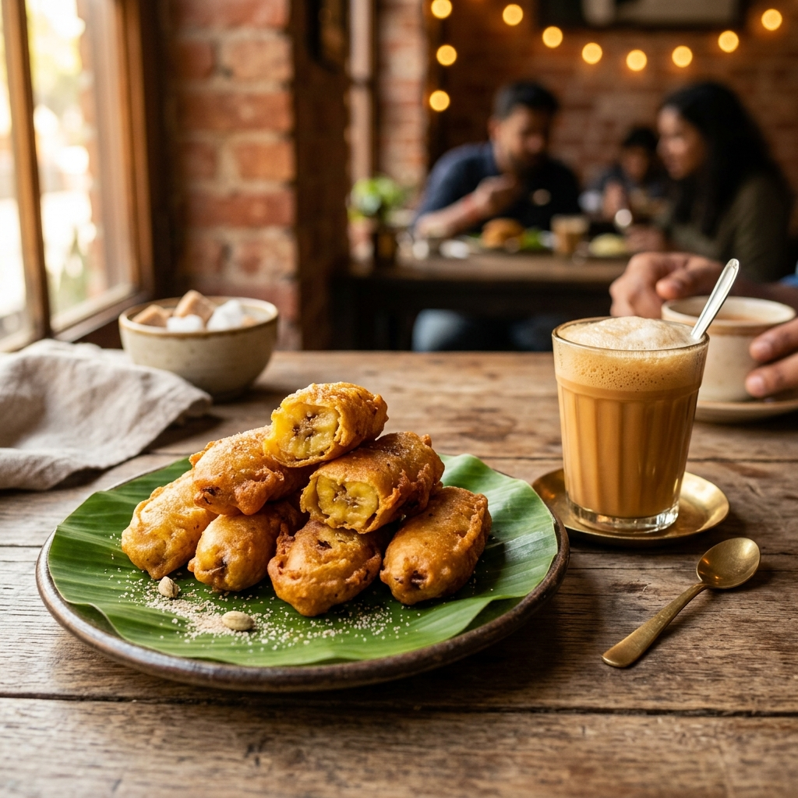

7 Mistakes I Made While Traveling
Everything I wish I knew before my first solo trip.
A complete, immersive guide for first-time solo travelers exploring the heritage streets, beaches, colonial cafés, and ancient coastal culture of Fort Kochi, Kerala.
The decision to take my first solo trip did not come in a flash of sudden courage. Instead, it was the slow accumulation of years spent looking at other people's travel logs, combined with a quiet, persistent itch to test my own boundaries. For months, I had been feeling stuck in a predictable routine, seeking a change that was entirely mine to direct. I wanted to see how I would manage when there was no one else to make decisions, no one to share the blame if a train was missed, and no one to lean on for small, everyday navigation.
But why Fort Kochi? As a resident of South India, I had heard whispering tales of this sleepy coastal enclave for years. Everyone spoke of it not as a bustling metropolitan hub, but as a cultural crossroad where history had settled in layers like silt at the mouth of the Vembanad Lake. Fort Kochi represents an intriguing mix: Portuguese churches, Dutch palaces, British bungalows, Jewish spice warehouses, and Chinese fishing nets—all crammed into a couple of square kilometers along the Arabian Sea. It felt like the perfect "soft landing" for a first-time solo traveler. It was historic, highly literate, culturally vibrant, and famous for its welcoming hospitality.
My preparation was a mix of meticulous logistics and sheer panic. In the weeks leading up to the trip, my Google search history was a chaotic index of travel anxieties: "Is Fort Kochi safe for solo women?" "What are the local auto rates in Kochi?" "Hostel vs. homestay in Fort Kochi?" "Do people speak English in Kerala?"
I chose to travel on a moderate budget, aiming for around ₹3,000 to ₹4,000 per day. I booked a cozy bed in a highly rated hostel on Princess Street to ensure I would be around fellow travelers, yet reserved enough cash to splurge on the historic cafes and entry fees. I packed light—a single 40-liter backpack with breezy linen clothes, an umbrella (essential for coastal Kerala's unpredictable showers), a power bank, a journal, and my mirrorless camera.
The night before departure, sleep was elusive. A chorus of doubts echoed in my head. *What if I get lost? What if I fall sick? What if I feel overwhelmingly lonely?* Traveling with friends or family provides a constant buffer of conversation; traveling alone meant I would be forced to sit with my own thoughts, facing the world head-on.
"Solo travel is not just about exploring a new geographic location; it is an audit of your own resourcefulness, patience, and capability to appreciate solitude."
The transition from the bustling hub of Ernakulam Junction railway station to the historic peninsula of Fort Kochi was a sensory shift. Instead of booking an expensive cab, I made the conscious decision to follow my own advice and take the public ferry from the Ernakulam Jetty. The ticket cost a mere ₹6.
As the double-decker wooden ferry chugged across the calm, green waters of the harbor, a cool breeze carried the tang of sea salt and diesel smoke. To my left, the towering container terminals of Vallarpadam stood like giant metal sentinels; to my right, the low-slung, tree-shaded coastline of Fort Kochi slowly emerged. Flocks of white terns dipped and soared alongside the boat, catching the wake.
Stepping off the jetty at Fort Kochi, the immediate sensation was one of stepping back in time. The air was thick and warm, smelling faintly of cardamoms, wet mud, and drying fish. The roads were narrow, winding between giant rain trees draped in heavy green moss and wild orchids. Old yellow and white colonial-era buildings stood behind low brick walls, their plaster peeling in artistic patches from decades of monsoon battering.
My initial anxiety began to dissolve, replaced by a deep, bubbling curiosity. I slung my backpack over my shoulder, pulled out my map, and took my first steps down the red-tiled lanes of Princess Street. The solo journey had officially begun.
To help you structure your own adventure, here is the exact hour-by-hour timeline of how I spent my three days in Fort Kochi. This itinerary balances sightseeing, café-hopping, cultural immersion, and much-needed downtime to just wander and absorb the atmosphere.
Arrived at Ernakulam Junction railway station. Navigated to the Ernakulam Jetty by auto (₹60) and boarded the public ferry. The 20-minute boat ride is the perfect transition from the noisy mainland to the peaceful historic island. It costs just ₹6 and offers spectacular harbor views.
Checked into my hostel located on Princess Street. Spent half an hour unpacking, chatting with the hostel manager to get local map recommendations, and drinking a hot glass of spiced chai in the common room.
Walked to a local eatery nearby and ordered a full Kerala Meal served on a fresh banana leaf. Recharged with red matta rice, sambar, avial, thoran, and a crispy papadam. The total cost was only ₹120, and it was incredibly filling.
Began a slow walking tour of Princess Street, Bastion Street, and Rose Street. The afternoon light filtering through the massive rain tree canopy cast beautiful shadows on the pastel-colored Dutch and Portuguese bungalows. Photographed the vintage bicycles parked against yellow colonial walls.
Walked down to the beachfront promenade. Watched the massive cantilevered Chinese Fishing Nets (Cheena Vala) in action. The fishermen invited me to pull the heavy ropes with them, explaining how the counterweights work. It was an interactive and unforgettable local experience.
Sat on the granite boulders along the seawall, watching the orange sun sink behind the shipping vessels in the distance. The sea breeze was cool, and the shore was lined with locals and street vendors selling roasted peanuts and raw mango slices seasoned with chili and salt.
Started the day at the famous Kashi Art Café. Had their signature French toast, organic eggs, and a shot of strong local espresso. The café is also an art space, displaying avant-garde sculptures and paintings in a green courtyard setting. Breakfast cost ₹350.
Took an auto-rickshaw (₹100) to Jew Town. Walked through the historic spice markets where sacks of black pepper, ginger, and cardamom were being unloaded. The rich aroma in the air was intoxicating and sweet.
Visited the historic Paradesi Synagogue, built in 1568. Marvelled at the hand-painted, blue-and-white Chinese porcelain floor tiles and the grand Belgian glass chandeliers. Right next door, I visited the Mattancherry Palace (Dutch Palace) to admire the incredible 16th-century mythological murals. Entry fees were minimal (₹5 for the Palace, ₹10 for the Synagogue).
Had a quiet lunch overlooking the water at the Ginger House restaurant, situated behind a massive antique shop. Tried their special ginger-infused fish fry and fresh ginger juice. It was a bit pricey (₹600) but the serene waterfront view and food were worth it.
Browsed the antique shops of Jew Town. Found gorgeous hand-woven textiles, aromatic spices, sandalwood oil, and old brass locks. Bargained respectfully with shopkeepers who shared stories about the Jewish families that once populated the lane.
Arrived early at the Kerala Kathakali Centre to watch the elaborate make-up session before the dance performance. The precision of the dancers' eye movements and facial expressions, accompanied by live drumming and singing, was mesmerizing. The ticket cost ₹400 and was the highlight of my evening.
Visited St. Francis Church, one of the oldest European churches in India, where Vasco da Gama was originally buried. Then walked to the majestic Santa Cruz Basilica to admire its gothic architecture and pastel-toned ceiling frescoes.
Explored David Hall, a restored Dutch bungalow that serves as a gallery showing contemporary art installations. Spent an hour sitting in their quiet garden café, drinking cold brew coffee and writing notes in my journal.
Walked to the Bishop's House grounds to tour the Indo-Portuguese Museum. The collection of silver processional crosses, gold-embroidered vestments, and teak altars beautifully documents the Portuguese influence in the region.
Enjoyed a final lunch of Appam and fish stew at a small family-run homestay kitchen (₹250). Walked back to the hostel, packed my bags, and checked out.
Instead of the old ferry, I took the brand new Kochi Water Metro from the Fort Kochi terminal back to Ernakulam. The air-conditioned electric catamaran was incredibly sleek and silent. Boarded my evening train back home, carrying a suitcase full of spices and a mind full of memories.
Fort Kochi is a small, walkable peninsula, but it packs a dense array of historical monuments, cultural centers, and natural retreats. Here is the complete breakdown of the fourteen sites I explored during my solo trip, complete with practical logistics and photography tips to make your journey smoother.

These iconic cantilevered fishing nets are the visual signature of Fort Kochi. Legend says they were introduced by traders from the court of the Chinese emperor Kublai Khan in the 14th century. Operable by a team of at least four fishermen using a complex system of wooden beams, ropes, and stone weights, they showcase an ancient, sustainable method of shoreline fishing.
Fishermen will often invite you to pull the ropes with them. It's a genuine experience, but be sure to offer a small tip of ₹50-₹100 afterward as a token of appreciation for their time and explanation.

A scenic coastline shaded by old Casuarina trees and giant rain trees. While the beach is not suitable for swimming due to strong currents and debris, it is the social heart of Fort Kochi. Locals, vendors, and travelers gather here to enjoy the breeze, walk along the paved granite promenade, and watch large cargo container ships pass by.
Grab a hot cup of lemon tea or roasted corn-on-the-cob from the beach vendors. It is a very safe space to sit alone and read or people-watch.

Originally constructed in 1503 by Portuguese Franciscan friars, St. Francis Church is the oldest European-built church in India. It stands as an architectural witness to the European colonial struggle in the subcontinent. The famous Portuguese explorer Vasco da Gama, who died in Kochi in 1524, was buried here for fourteen years before his remains were moved to Lisbon.
The original burial spot of Vasco da Gama is clearly marked with a brass railing inside the church. Respect the quiet zone guidelines inside.

This striking, pastel-painted Gothic cathedral is one of the eight Basilicas in India. Originally built by the Portuguese in 1505 and later rebuilt by the British in the late 19th century, it is famed for its grand, towering white facade, stained glass windows, and beautiful frescoes depicting the Passion of Christ on the high ceilings.
The square outside the basilica is a lively spot filled with street food carts. The church is wonderfully cool inside, making it a great place to escape the midday heat.

Built by the Portuguese around 1555 as a gift to Raja Veera Kerala Verma of Kochi, this palace was later renovated by the Dutch in 1663, earning it the name 'Dutch Palace'. The palace is designed in the traditional Kerala style (Nalukettu) with a central courtyard. It houses an exceptional collection of 16th-century murals illustrating scenes from the Ramayana, Mahabharata, and Puranic legends.
Take your time reading the exhibits detailing the lineage of the Cochin royal family. The entry ticket is extremely cheap, and it is a fascinating piece of history.

Jew Town is a narrow, colorful street in Mattancherry that was once the residential heart of the Malabari and Pardesi Jewish community in Kochi. Today, the street is a bustling market for antiquities, bronze statues, hand-woven carpets, vintage clocks, and aromatic spices. The historic houses with carved wooden windows and Hebrew inscriptions tell stories of a fading era.
Don't miss the Pardesi Synagogue located at the end of the street. Respectful dress code is required (no sleeveless tops or short shorts).

Consecrated in 1724, this quiet, overgrown cemetery is the oldest European cemetery in India. It contains the tombstones of Dutch officers, traders, and their families who lived and died in Kochi during their colonial rule in the 17th and 18th centuries. The graves, built of laterite and lime plaster, are slowly being consumed by moss and wild vines.
The cemetery is maintained by the Archaeological Survey of India. If the caretaker happens to be around, you might politely ask them to let you inside for a few minutes.

One of the oldest streets in Fort Kochi, Princess Street is lined with colonial-era houses built in the Dutch, Portuguese, and British styles. The street is now the commercial hub of the heritage zone, filled with boutique bookstores, souvenir shops, handicraft centers, and modern organic cafés.
This is the best street to base yourself. It is extremely safe, well-lit at night, and always has other tourists around.
.jpg)
A bustling waterfront promenade adjacent to the Chinese Fishing Nets. Named after the legendary explorer, this square is a lively gathering spot filled with food stalls selling fresh catches cooked to order, ice cream carts, and local street performers.
Avoid buying fish from the stalls unless you are willing to negotiate hard. Prices for tourists can be inflated. However, trying the fresh tender coconut water here is highly recommended!

A beautifully restored 350-year-old Dutch bungalow, David Hall was built by the Dutch East India Company. Today, it has been converted into a contemporary art space and gallery curated by the CGH Earth group. The gallery supports young, local artists and features a serene, green courtyard garden with a wooden-fire pizza oven and café.
Sit in the garden under the massive mango tree. It is one of the quietest spots in Fort Kochi, perfect for reading a book or writing in your journal.

Located inside the lush grounds of the Bishop's House, this museum was established by the late Bishop of Kochi to preserve the rich Portuguese heritage of the region. The museum displays religious artifacts, processional crosses, gold chalices, wood-carved altars, and ancient maps that date back to the 16th century.
The museum is divided into five galleries: Altar, Cathedral, Treasure, Procession, and Civil. Follow the numbered sequence for the best historical narrative.

The premier cultural institute in Fort Kochi dedicated to the traditional performing arts of Kerala. Kathakali is a stylized classical dance-drama noted for the attractive make-up of characters, detailed gestures, and well-defined body movements. The center also hosts performances of Kalaripayattu (ancient martial art) and classical music.
Watching the makeup process is fascinating. The natural pigments are applied by hand, and it takes the artists over an hour to transform. A narrator explains the sign language of mudras before the show begins.

A scenic, vehicle-free promenade in the heart of Ernakulam, overlooking the backwaters. Famous for its landmark structures like the Rainbow Bridge and the Chinese Net Bridge, it is the modern social hub of Kochi's mainland, lined with shopping malls, boat cruise docks, and high-rise apartments.
You can book a 1-hour sunset cruise from the Marine Drive jetty for only ₹150-₹200. It's a great way to see the Cochin shipyard and harbor on a budget.

Located about 25 km north of Fort Kochi on Vypin Island, Cherai Beach is a beautiful, clean stretch of sandy shore flanked by coconut groves and peaceful backwaters. Unlike Fort Kochi Beach, Cherai is perfect for swimming, sunbathing, and spotting playful dolphins leaping near the coast.
To reach Cherai on a budget, take the ferry from Fort Kochi to Vypin (₹3) and then board a direct local bus to Cherai Beach (₹30). It is a scenic and authentic way to travel.
To help you navigate, I have plotted all 14 locations described above onto this interactive map. Click on any marker to view the sight name, brief operating info, and a shortcut to jump straight to its description on this page.
One of the biggest concerns for first-time solo travelers is budgeting. Fort Kochi is a wonderful destination because it caters to both shoestring backpackers and luxury heritage seekers. Below, you will find an estimated cost sheet for various services, followed by an interactive calculator to see how far your money will go based on your daily spending goal.
Select your target daily budget to see a personalized breakdown of accommodation, transport, meals, and activities in Fort Kochi:
Target Daily Budget
Perfect for shoestring travelers. You will stay in clean shared hostel dormitories, eat nutritious traditional Kerala meals, travel using public ferries or buses, and focus on free or low-cost sights.
Here is a quick reference guide of what you can expect to pay for individual transport, lodging, food, and activities. Knowing these average rates helps prevent getting overcharged.
| Category | Item Details | Estimated Cost (INR) | Money-Saving Tip / Alternative |
|---|---|---|---|
| Train | Express train ticket from nearby major cities to Ernakulam (Sleeper Class) | ₹250 - ₹450 | Book well in advance to avoid Tatkal premium rates. |
| Bus | Local KSRTC bus from Ernakulam to Fort Kochi (one-way) | ₹18 - ₹30 | Avoid taking peak hour buses as they can get extremely crowded. |
| Auto-rickshaw | Short ride within Fort Kochi (up to 2 km) | ₹40 - ₹60 | Ask the driver to use the meter, or agree on the fare before boarding. |
| Auto-rickshaw | From Fort Kochi to Mattancherry / Jew Town | ₹80 - ₹120 | Bargain politely. If they ask for ₹200, refuse and wait for another. |
| Kochi Metro | Aluva to MG Road / Ernakulam South (one-way transit) | ₹20 - ₹60 | Buy tickets online via the Kochi1 app to save time. |
| Kochi Water Metro | AC electric catamaran from High Court Terminal to Vypin / Bolgatty | ₹20 - ₹40 | Buy a day pass if you plan to make multiple island hops. |
| Public Ferry | Wooden ferry boat from Ernakulam Main Jetty to Fort Kochi (one-way) | ₹6 | By far the cheapest and most romantic way to enter Fort Kochi. Runs every 20-30 minutes. |
| Hostel | Shared dorm bed on Princess Street (per night, AC/Non-AC) | ₹450 - ₹800 | Includes free high-speed Wi-Fi and common room filters. Great for solo travelers. |
| Homestay | Private room in a local home (per night, with private bath) | ₹1,200 - ₹2,200 | Often includes home-cooked breakfast and helps local families directly. |
| Heritage Hotel | Boutique air-conditioned luxury room in restored Dutch/Portuguese building | ₹4,500 - ₹9,000+ | Includes swimming pools, continental breakfast, and high-end services. |
| Local Food | Traditional vegetarian Kerala Meals (Sadhya) at local mess | ₹90 - ₹130 | Unlimited rice and curries on a banana leaf. Incredibly cheap and delicious. |
| Café Dining | Fresh juice, espresso coffee, and breakfast/cake at boutique café | ₹250 - ₹450 | Treat yourself once a day. Kashi, David Hall, and Alice Deli are outstanding. |
| Kathakali Ticket | 1-hour cultural show + makeup viewing at Kathakali Centre | ₹400 | A must-do. The price is fixed for everyone. Arrive early. |
| Shopping | 100g packets of high-grade cardamoms, pepper, and tea leaves in Jew Town | ₹150 - ₹300 | Shop at government-run cooperatives to ensure spice purity and fair prices. |
Food is a major highlight of any trip to Kerala. The local cuisine is a rich blend of spices, coconut, rice, and fresh seafood. During my three days, I made it a point to try traditional street eats, local meals in home-style mess halls, and upscale items in boutique cafés. Here is my complete culinary log:
.webp)
Served on a fresh banana leaf, this meal is a feast of red matta rice accompanied by avial (mixed vegetables in coconut), thoran (dry grated coconut curry), sambar, rasam, curd, pickles, and a crispy papadam. The taste was wholesome, comforting, and authentic.

A thin, bowl-shaped pancake made of fermented rice batter and coconut milk, with crispy lacy borders and a soft, pillowy center. It is light, slightly sweet, and acts as the perfect vehicle for local savory curries.

A rich, creamy gravy made of coconut milk simmered with potatoes, carrots, peas, ginger, green chilies, and whole spices like cinnamon and cloves, finished with fresh curry leaves and coconut oil. Absolutely pairs best with hot Appams.
.webp)
A freshwater pearl spot fish marinated in a rich paste of red chili, ginger, garlic, shallots, and local spices, wrapped in a fresh banana leaf and grilled on a griddle. The fish is incredibly flaky, smelling of roasted banana leaf and spices.

Cylindrical logs of steamed ground rice layered with grated coconut. It is dry on its own and requires a good gravy to soften it up, but it is the ultimate, energy-packed local breakfast.

A spicy black chickpea curry cooked in a heavily roasted coconut gravy tempered with mustard seeds, curry leaves, and dry red chilies. It is the classic partner for Steamed Puttu, providing a delicious spicy kick.

The ultimate Kerala evening snack. Ripe local bananas (Ethapazham) sliced lengthwise, dipped in a sweet flour batter, and deep-fried to a golden brown crisp. Tastes best when piping hot alongside a cup of strong cardamom tea.

A shaken lemonade containing soaked sweet basil seeds (sabja), fresh lime, sugar syrup, a slice of spicy green chili, and ice. Shaken vigorously in a steel glass. It is incredibly refreshing, sweet, sour, and slightly hot!

Fresh ocean prawns purchased straight from the fishermen at the nets and taken to a nearby "You Buy, We Cook" stall. They fried it with garlic, red chilies, pepper, and coconut oil. It was incredibly fresh and juicy.

Fort Kochi has an elite café culture. Sitting in Kashi's open courtyard, drinking a perfectly pulled double shot of local beans and eating their legendary, moist, spiced chocolate-and-carrot cake is a mandatory ritual.
Kerala is repeatedly ranked as one of the safest states in India for solo travelers, and Fort Kochi is its crown jewel. The local culture is respectful, tourist-friendly, and very open-minded. However, being smart and taking precautions is key to ensuring a stress-free trip. Here is everything I learned about staying safe:
Make sure to write these down or save them in your contacts before your journey starts:
The local people are highly respectful. You will rarely face active catcalling. However, staredowns can occasionally happen out of curiosity. Dress modestly—shoulder and knee-covering outfits are ideal. If you feel uncomfortable, step into a local cafe or boutique shop and ask the staff for help.
Fort Kochi is very peaceful, but street lighting in some heritage alleys can be sparse. It is safe to walk Princess Street and the beach promenade up to 10:00 PM. Avoid exploring dark backalleys alone past 9:00 PM. For late-night transit back to your hostel, book an auto-rickshaw rather than walking.
Pickpocketing is rare in Fort Kochi, but it can happen in crowded places like the Ernakulam ferry terminal, spice markets, or busy public buses. Use a cross-body bag or wear your backpack on the front in crowded transits. Avoid displaying large rolls of cash.
Jio and Airtel have strong 4G and 5G network coverage throughout Fort Kochi, Mattancherry, and Vypin. Mobile internet speeds are excellent, which is a lifesaver for using Google Maps to navigate the winding lanes. Hostels and cafes offer reliable, free high-speed Wi-Fi.
Many small restaurants, tea stalls, and ticket counters do not accept credit cards or digital UPI payments (if you do not have an Indian bank account). Carry enough cash. Use ATMs located on major commercial roads (like Princess Street or KB Jacob Road) during daylight hours.
Fort Kochi is hot and humid year-round, except during the heavy monsoons (June to September). The rain can be torrential, causing short-term water logging. If traveling during monsoon, pack waterproof bags for your electronics, a sturdy umbrella, and quick-drying shoes. Stay hydrated!
When entering temples, churches, or synagogues, you are expected to dress respectfully. Remove your shoes where indicated. Some Hindu temples in Kochi are open only to Hindus; check signs at the entrance. Ask for permission before photographing local residents.
Public ferries are safe, well-regulated, and equipped with life jackets. Wait for passengers to disembark before boarding, and hold onto the rails. Kochi Metro is ultra-clean, modern, and has dedicated coaches and helpline buttons for female travelers.
Fort Kochi is a visual wonderland. From weathered colonial plaster and towering green trees to silent backwaters and active fishing harbors, every corner feels like a film set. Here is my curated guide to getting the best shots:
The sunlight in Kochi can be harsh and glaring between 10:30 AM and 3:30 PM. For warm, soft lighting:
Important Warning: Fort Kochi is situated adjacent to critical naval, defense, and shipyard zones. Kochi Harbor and the shipyard are strictly **No-Fly Zones** for civilian drones. Do not attempt to fly drones near the harbor mouth, shipping lanes, or navy offices. You risk confiscation of equipment and legal action. For other areas, standard DGCA rules apply (register on DigitalSky).
Packing smart is vital for a solo trip. Because you carry your own bags, traveling light prevents muscle strain and makes boarding crowded ferries easy. Here is my recommended list of items. Check them off as you pack; your list will automatically save so you can return to it later.
Even with the best planning, a first solo trip is bound to have a few speed bumps. Looking back, there are several things I would have done differently. To help you avoid the same pitfalls, here are the six major mistakes I made during my three days in Fort Kochi:
My Mistake: I packed an extra pair of heavy jeans, two bulky sweaters "just in case it gets cold at night," and multiple pairs of fancy shoes. Carrying a 12 kg backpack while trying to board a moving public ferry in the humid heat was exhausting and uncomfortable.
The Lesson: Fort Kochi is hot and humid year-round. You only need light, loose-fitting cotton or linen clothes. One comfortable pair of walking shoes and a pair of water-resistant sandals are more than enough.
My Mistake: I assumed the ferries ran continuously into the late night. On my second day, I stayed in Ernakulam mainland for dinner and arrived at the jetty at 10:00 PM, only to find the gates closed. I had to pay ₹350 for a late-night auto-rickshaw ride back via the bridge, which took three times as long.
The Lesson: The main public passenger ferry between Ernakulam Jetty and Fort Kochi stops operating around 9:30 PM. Always check the official time boards at the ticket counters, or plan to return early.
My Mistake: I planned my walking tour of Mattancherry and Jew Town at 1:30 PM. Walking under the scorching midday sun with 90% humidity drained my energy completely, and I ended up rushing through the beautiful murals at Mattancherry Palace just to escape the heat.
The Lesson: Do your heavy outdoor exploring and walking tours between 7:30 AM – 10:30 AM and after 4:00 PM. Keep the middle of the day reserved for air-conditioned museums, quiet lunch sessions, or resting at a shady café.
My Mistake: Relying completely on digital payments. I sat down for lunch at a local vegetarian mess hall, only to realize they did not accept card or online UPI payments for transactions under ₹200. I had to leave my backpack at the counter and walk 15 minutes in the sun to find an active ATM.
The Lesson: Always carry a reserve of small cash denominations (₹10, ₹20, ₹50, and ₹100 notes). Public ferries, auto drivers, street tea stalls, and historical monument entry counters rarely accept cards or digital wallets.
My Mistake: On my first day, I got distracted chatting in a café and arrived at Fort Kochi Beach at 6:15 PM. By the time I walked down the promenade, the sun had already slipped behind the horizon, and I missed the prime shooting light for the Chinese nets.
The Lesson: Because of Kochi's geographical location near the equator, sunset happens quickly. Start walking toward the beach by 5:15 PM so you can find a comfortable spot, watch the colors transition, and capture the true golden hour.
My Mistake: Looking at a flat 2D map, I thought walking from Fort Kochi beach to Jew Town in Mattancherry would be a short 15-minute stroll. It turned out to be a hot, dusty 4.5 km walk along busy main roads with narrow sidewalks, which left me dehydrated.
The Lesson: While Fort Kochi's heritage core is walkable, Mattancherry is separate. Take a cheap auto-rickshaw (₹100) or hire a bicycle for the day (₹150) to commute between these two major zones.
To make your planning seamless, here is a directory of essential travel tips, local secrets, and cultural etiquette that I compiled during my solo journey in Fort Kochi.
The ideal time is from October to March. During these months, the weather is cooler and pleasant, and the humidity drops. If you want to experience the famous Cochin Carnival, visit in late December.
Expect tropical climate. Summer (March-May) is hot and extremely humid, with temperatures reaching 35°C (95°F). Monsoons (June-September) bring heavy downpours. Winter (October-February) is warm, dry, and highly comfortable.
Malayalam is the local language, but English is widely spoken and understood by almost everyone, including taxi drivers, hotel managers, and shopkeepers. Basic Hindi is also understood by many.
The Indian Rupee (INR) is used. Foreign exchange counters are available on Princess Street. Credit cards are accepted in heritage hotels and high-end cafes, but local eateries and shops require cash.
International tourists can buy a local prepaid SIM card (Airtel or Jio are best) at the Cochin International Airport. You will need your passport, visa copy, and a passport-sized photograph for activation.
Ferries are the fastest, cheapest transit between the mainland and Fort Kochi. Within the heritage zone, walking or renting a bicycle (₹150/day) is best. For longer trips, hail an auto-rickshaw or book an Uber.
If traveling solo on a budget, book hostel dorms on Princess Street. If you want a peaceful, homestay-like atmosphere, choose properties near KB Jacob Road. Book well in advance for winter stays.
Bargain politely in Jew Town antique shops; initial quotes can be high. For buying spices, tea, and coffee, visit government-approved co-operatives or shops that sell vacuum-sealed packages.
Remove footwear before entering local homes and religious spaces. Dress conservatively. PDA (Public Displays of Affection) is generally frowned upon. Always ask before taking pictures of local people.
While the main sights are beautiful, some of my favorite moments were in lesser-known locations:
Here is a visual diary of my travel experiences in Fort Kochi. Click on any image to open it in a beautiful full-screen lightbox where you can zoom in and browse through the collection.
.jpeg)
.jpeg)
.jpeg)
.jpeg)
.jpeg)


Image Description goes here.
To help you prepare for your journey, I have answered the 30 most common questions that solo travelers ask when planning a trip to Fort Kochi.
If you are planning to extend your journey across Kerala, check out my other detailed guides loaded with budget and safety tips:


Everything I wish I knew before my first solo trip.

One unexpected rainy day became the highlight of my Kerala journey.

The journey I almost cancelled became unforgettable.

Traveling across Kerala for just a few rupees.

One small decision completely transformed my journey and made it unforgettable.

Everything you should know before riding the Water Metro.

The lessons I learned after completing my trip.

Confidence, freedom and life lessons from traveling solo.
Reader Comments (0)